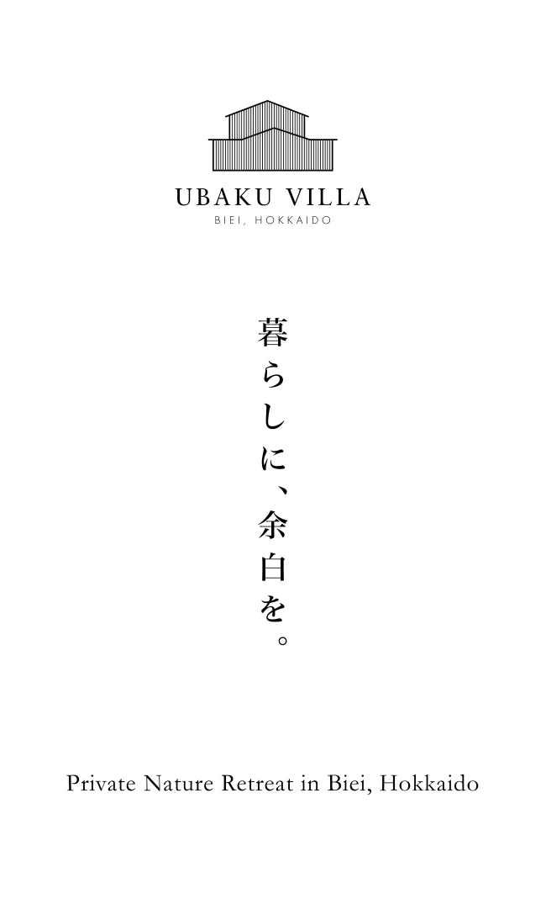
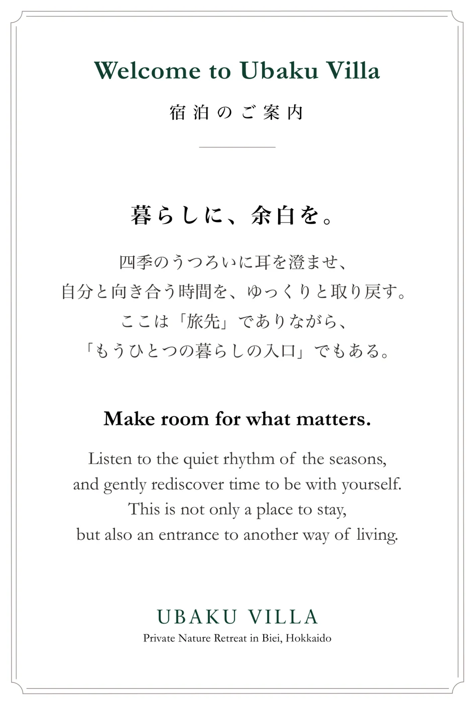
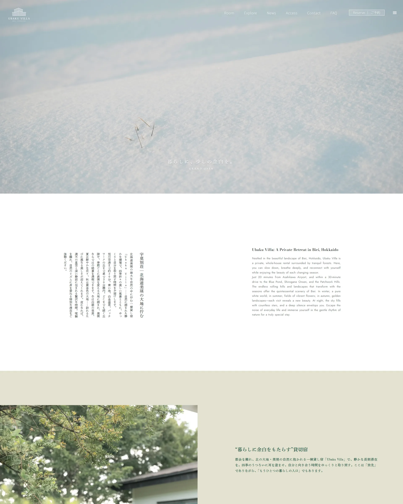

#29463D森の緑
#C4B370金
#F4F1EA生成り



美瑛の集落・中宇莫別に建つ、1968年築、半世紀を超えて受け継がれてきた元農家住宅。空き家になっていたこの家を、物件探しから自分たちで手がけ、1日1組限定の一棟貸しの宿にしました。改修のデザイン監修から、ブランディング（ビジュアルデザイン・Webデザイン）まで、ひとつの世界観でつくっています。2025年12月にプレオープン、2026年1月にグランドオープン。
空き家になった元農家住宅を、世界のゲストが帰りたくなる場所にできるだろうか。
木目の壁、レンガの柱、畳の部屋。長く大切に使われてきた家は、部屋ごとに区切られて暗く、窓の外に広がる森や丘が、家の中からは見えにくい状態でした。


和室とダイニングのあいだの壁を取り、ひと続きの広々とした空間にしました。壁と床は白と明るい木でまとめ、光と窓の外の景色を家の中に入れています。キッチン・浴室・洗面などの水まわりは、10名で泊まっても使いやすい形に。家具や照明は、景色をじゃましないものを選びました。ロゴやカードも、同じ森の緑と金色でそろえています。

写真の上のつまみを左右に動かすと、改修前と改修後を見比べられます。
木目の壁とレンガの柱の部屋を、窓の景色が映える白い空間に。

古い流し台を、ゲストが料理を楽しめるシステムキッチンに。


畳の和室を、木の天井とアクセントの壁紙の寝室に。

タイル張りの浴室を、ゆったり入れる明るい浴室に。


古い勝手口まわりを、丸い鏡が並ぶ洗面室に。


手すりの付いた古いトイレを、手洗いのある落ち着いた空間に。


細長い廊下のような場所を、洗濯機を置けるランドリーに。


畳の小部屋を、二人で使えるワークスペースに。





全部を新しくするより、
残せるところを、残す。
階段のように、重厚感のあるところはできるだけ残しました。新しいものと古いものが混ざり合うことが、この家ならではの味になります。残せるところを残すことで、改修の費用とも無理なく折り合いがつけられます。ここに暮らしがあった痕跡を、これからも残していきたい。そう考えています。
建物のこと、ブランドのこと、
お聞かせください。
古い建物を生かしたい、宿や店舗に変えたい、お店の見せ方を整えたい。まだ形になっていない思いつきでも大丈夫です。
UBAKU Design に相談する →